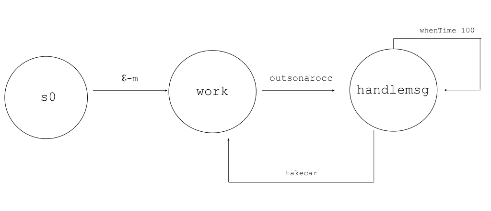
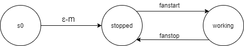
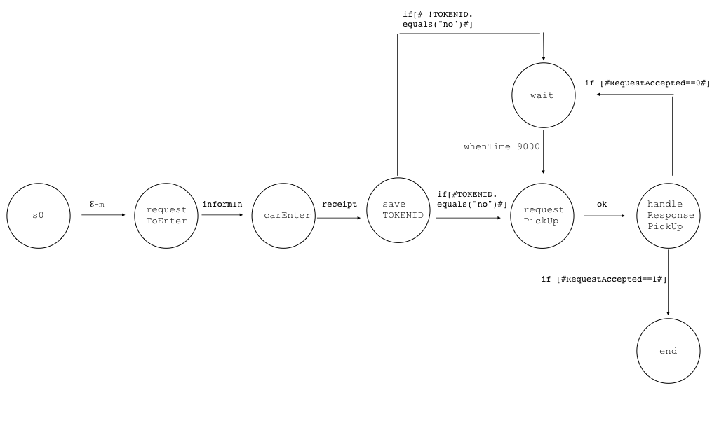
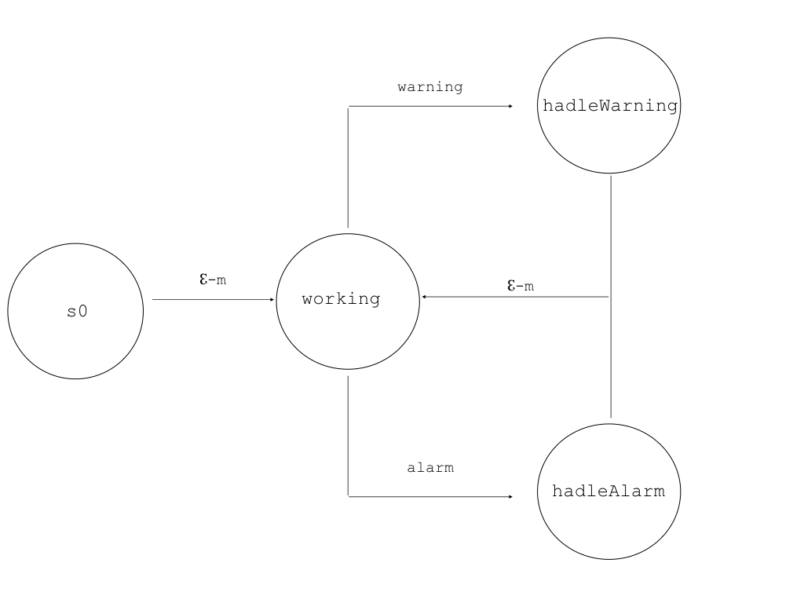

- Sprint1: realize basic movements of the transport trolley.
- Sprint2: realize the interaction between the parkManagerService and client.
- Sprint3: realize interaction between the parkManagerService and the sensors.
- Sprint4: realize the operations of the fan, thermometer and parkingmanager.
- Sprint5: realize the operations of the parkingManager.
The BasicRobot
The basicrobot was given by the costumer: basicrobot2021.html. It will use to commununicate between the DDR robot and the transport-trolley because it allows us to execute the robot movement commands in a 'technology-independent' way, with respect to the nature of the robot (virtual or real).
|

|
The TransportTrolley
The comunication with the the DDR robot will be managed by a QActor called "trolley" which will be developped starting from the "basicrobot".
The trasport trolley should reach the goal place in a organizzed way: so the transport-trolley should planning (detection) the best sequence of actions and execute them (actuation: e.g. sending messages to the basic robot).
|

|
Components comunication
TransportTrolley/Basicrobot
The TransportTrolley will send the command to the basicrobot in a asynchronous way to reduce the quantity of messages and prevent the application from waiting for a response.
|
Dispatch cmd : cmd(MOVE)
Context ctxparkingarea ip [host="localhost" port=8021]
QActor trolley context ctxparkingarea{
...
forward basicrobot -m cmd : cmd(w)
...
}
|
The Outsonar
In our analysis, this element is an autonmous active component that does not 'known' any other component.
Therefore the Outsonar is modelled as a mock QActor and it is an events emitter which are sent when the OUTDOORAREA is vacated.
The following file could be use to realize a real sonar: SonarAlone.c
|

|
Components comunication
Outsonar
The outsonar as an events emitter
|
Event outsonar : outsonar (O)
Context ctxparkingarea ip [host="localhost" port=8021]
QActor outsonar context ctxparkingarea{
...
emit outsonar : outsonar(O)
...
}
|
The Weightsensor
|
In our analysis, this element is an autonmous active component that does not 'known' any other component.
Therefore the Weightsensor is modelled as a mock QActor and it is an events emitter which are sent when the INDOORAREA is vacated. It should be able to send the information about the weight too.
|

|
Components comunication
Weightsensor
The weightsensor as an events emitter
|
Event weightsensor : weightsensor (W)
Context ctxparkingarea ip [host="localhost" port=8021]
QActor weightsensor context ctxparkingarea{
...
emit weightsensor : weightsensor ($WEIGHT)
...
}
|
The Thermometer
|
In our analysis, this element is an autonmous active component that does not 'known' any other component. Therefore it is modelled as an emitter of events.
The thermometer will be modeled like QActors.
|

|
Components comunication
Thermometer
The thermometer as an emitter of event.
|
Event temperature : temperature (T)
Context ctxparkingarea ip [host="localhost" port=8021]
QActor thermometer context ctxparkingarea{
...
emit temperature : temperature ($VALUE)
...
}
|
The Fan
|
The Fan is modelled as a mock QActor and its aim is to reduce the temperature of the parking area when it is working. It will be activated by the ParkManagerService(automatic mode) or the parking-manager(human).
|

|
ParkManagerService
ParkManagerService
The ParkManagerService QActor:
- manage the requests from the clients, excecute them and elaborate the replies;
- manage the parking-area with information of the weightsensor and the outsonar.
|

|
Components comunication
ParkManagerService/TransporTrolley
The ParkManagerService will send the command to the transport-trolley in a asynchronous way to reduce the quantity of messages and prevent the application from waiting for a response.
|
Dispatch cmd : cmd(MOVE)
Context ctxparkingarea ip [host="localhost" port=8021]
QActor parkmnagerservice context ctxparkingarea{
...
forward transporttrolley -m cmd : cmd(w)
...
}
|
OutManager
|
The Outmanager was modelled as QActor and its aim is to send an alarm (event) when the OUTDOORAREA is still vacated over a DTFREE time.
It is a part of ParkManagerService and it is specialized to manage the outsonar informations.
The reason why it is necessary modelled this actor is the implementation of timer and, thus, guarantee the fulfillment of other actions by other components while the timer is going.
|

|
Components comunication
Outmanager/ParkManagerService
The Outmanager will send dispatches to the
ParkManagerService to inform it if the OUTDOORAREA is vacated or not. When it is over the DTFREE the OutManager will send to the ParkingManager an alarm which is an event.
|
Dispatch outfree : outfree(free)
Event alarm : alarm(V)
Context ctxparkingarea ip [host="localhost" port=8021]
QActor outmanager context ctxparkingarea{
...
State work{
...
forward parkmanagerservice -m outfree : outfree (occ)
emit alarm : alarm(V)
...
}
}
State free {
forward parkmanagerservice -m outfree : outfree (free)
}
}
|
ParkingManager
- The ParkingManager interacts via network with the the thermometer, fan, trolley and the ParkServiceStatusGui.
It is a part of ParkManagerService and it is specialized to manage the parkingmanager human behavior.
In our analysis the existence of the ParkingManager is related to the requirement to stop the transport-trolley which cannot be done by ParkManagerService;
- The ParkingManager should recive the information of the transport-trolley and the fan so its is like an observer too.
|

|
Components comunication
ParkingManager/TransportTrolley
|
The ParkingManager will send the command to the transport-trolley in a asynchronous way to reduce the quantity of messages and prevent the application from waiting for a response.
|
Dispatch trolleystop : trolleystop(V)
Dispatch trolleyresume : trolleyresume(V)
Context ctxparkingarea ip [host="localhost" port=8021]
QActor parkingmanager context ctxparkingarea{
...
forward transporttrolley -m trolleystop : trolleystop(w)
...
forward transporttrolley -m trolleyresume : trolleyresume(w)
}
|
ParkingManager/Fan
The ParkingManager will send the command to the fan in a asynchronous way to reduce the quantity of messages and prevent the application from waiting for a response.
|
Dispatch fanstart: fanstart(V)
Dispatch fanstop : fanstop(V)
Context ctxparkingarea ip [host="localhost" port=8021]
QActor parkmanagerservice context ctxparkingarea {
...
forward fan -m fanstart: fanstart(on)
...
forward fan -m fanstop: fanstop(off)
}
|
ParkingManager
The interaction follow is modelled with events because the receiving is uknown in the requirements and other components could be intrested of what is happening in future.
|
Event warning : warning(V)
Event alarm : alarm(V)
Context ctxparkingarea ip [host="localhost" port=8021]
QActor parkingmanager context ctxparkingarea {
...
emit warning : warning(V)
emit alarm : alarm(V)
}
|
The WebGui
The ParkServiceGui
|
The ParkServiceGui should use by the client to inform the application the intent to enter or take the car. It should also inform the client if he should wait to take the car, or if there aren't any slots in the parking-area, etc.
In this case we will simulate the behaviour of the client: it is an mock QActor.
|

|
Components comunication
ParkingServiceGui/ParkManagerService
The interaction follow the request/response model because when the client send a command the application must answer with helpful informations (e.g. SLOTNUM, TOKENID...)
|
Request carenter : carenter(C)
Reply receipt : receipt(I)
Request notifyIn : notifyIn(N)
Reply informIn : informIn(S)
Request pickup : pickup(TOKENID)
Reply ok : ok(O)
Context ctxparkingarea ip [host="localhost" port=8021]
QActor parkingservicegui context ctxparkingarea{
...
request parkmanagerservice -m notifyIn : notifyIn(A)
...
request parkmanagerservice -m carenter : carenter ($SLOTNUM)
...
request parkmanagerservice -m pickup : pickup($TOKENID)
}
QActor parkmanagerservice context ctxparkingarea{
...
replyTo notifyIn with informIn : informIn($SLOTNUM)
...
replyTo carenter with receipt : receipt($TOKENID)
...
replyTo pickup with ok : ok($OUTFREE)
}
|
The ParkServiceStatusGui
|
The ParkServiceStatusGUI should monitor the the system current state. It should ask to the application the information needed. The implementation could be done with a polling mechanism, that is a request/response interaction, but this is only one possible solution. Another one could be a dispatch interaction, or using an observer.
In this case we will simulate the behaviour of the parking-manager(human): it is an mock QActor.
|

|
Components comunication
ParkServiceStatusGui
The interaction follow is modelled with events because the ParkServiceStatusGui operations will processing like a botton which are like an observable in an distribuited system.
|
Event stateChangetrolley : stateChangetrolley (V)
Event stateChangefan : stateChangefan (V)
Context ctxparkingarea ip [host="localhost" port=8021]
QActor parkservicestatusgui context ctxparkingarea {
...
emit stateChangetrolley : stateChangetrolley(stop)
emit stateChangefan : stateChangefan(work)
...
emit stateChangetrolley : stateChangetrolley(work)
emit stateChangefan : stateChangefan(stop)
}
|
Logical Architecture
Testplan
Testplan 1: the testplan should check the correspondence of the movements between the transport-trolley and the basicrobot.
The test will be done by comparing two strings.
- path: are the commands to reach the goal;
- result: are the real commands sending to the DDR robot from the basic robot.
At the end of the execution the two strings should be equals.
The code is the following file: TestPlan1.kt.
Testplan 2: we should simulate and check if the parkservicegui receive the correct Slotnum.
The code is the following file: TestPlan2.kt.
Testplan 3: we should simulate and check if the parkservicestatusgui receive the alarm from the outmanager when the OUTDOORAREA is still vacated over a DTFREE time.
The code is the following file: TestPlan3.kt.
Testplan 4: we should simulate and check if the parkingManager turn on/off the fan if the temperature is higher/lowre than TMAX.
The code is the following file: TestPlan4.kt.
Testplan 5: we should simulate and check if the parkingManager stop the transport-trolley.
The code is the following file: TestPlan5.kt.
Deployment
The project is located in the repository: https://github.com/noemival/ParkManagerService_2021/tree/main/it.unibo.parkManagerService
By studentName email: antonio.iacobelli@studio.unibo.it

By studentName email: noemi.valentini5@studio.unibo.it